¡Tuanis vos!
Hoy tocó turistear. Es increíble lo bonito, limpio y bien cuidado que está San Juan del Sur. Para los guatemaltecos treintones o ya chavorucos, la palabra «tuanis» les va a recordar su infancia: en algún momento entre los 90 y los 2000 se usó un montón. Recuerdo haberla escuchado, pero nunca la usé.
Hoy en día creo que la cultura centroamericana se ha ido fusionando. Una palabra muy guatemalteca es «cabal», y la escuché en todos lados: en cada lugar donde preguntábamos algo nos decían «sí, cabal, eso mero», y yo: «owww, me siento como en casa».
San Juan del Sur es una pequeña maravilla. Como les decía antes, es muy bonito y bien cuidado; es lo que Pana en su momento quiso ser, es lo que El Paredón y cualquier playa de Guatemala quisieran ser. Tienen un mirador muy bonito: cobran 40 córdobas por persona, más o menos 1 dólar. Lleven efectivo si van a ir, y si van a estar en Nicaragua saquen bastante, que les va a hacer falta. Todo es bastante barato y, como dije en posts anteriores, la comida abunda.
Fuimos al mirador del Cristo de la Misericordia, una estatua bastante grande que, según leí, se hizo en agradecimiento por algún suceso. Adentro hay una pequeña capilla y las vistas son impresionantes. Eso sí, mejor vayan con tenis y con buen cardio, porque la colina es empinada. Si van en carro no hay que caminar tanto, unos 100 metros, pero con una subida que ha de tener unos 80 grados y que sí saca las lágrimas.
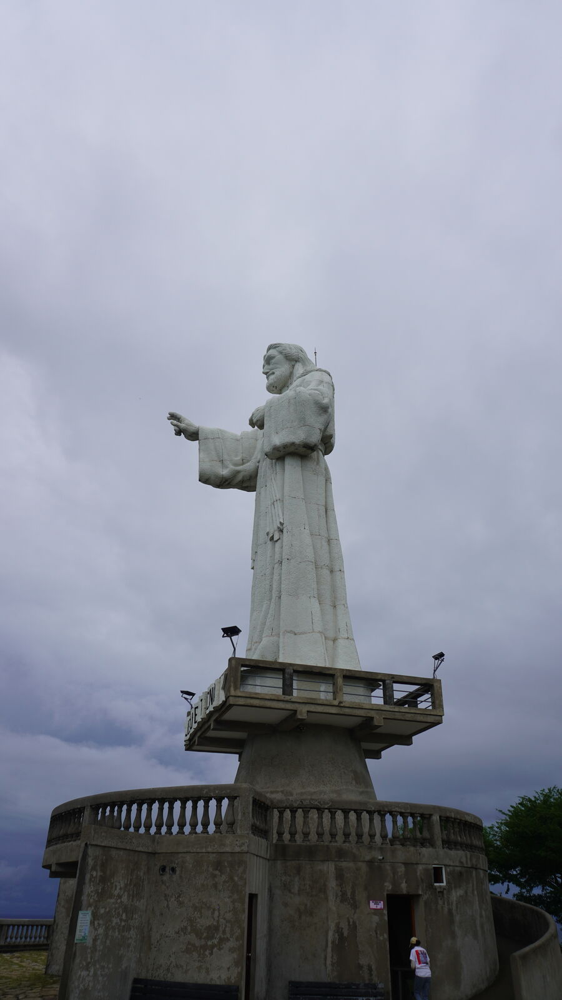
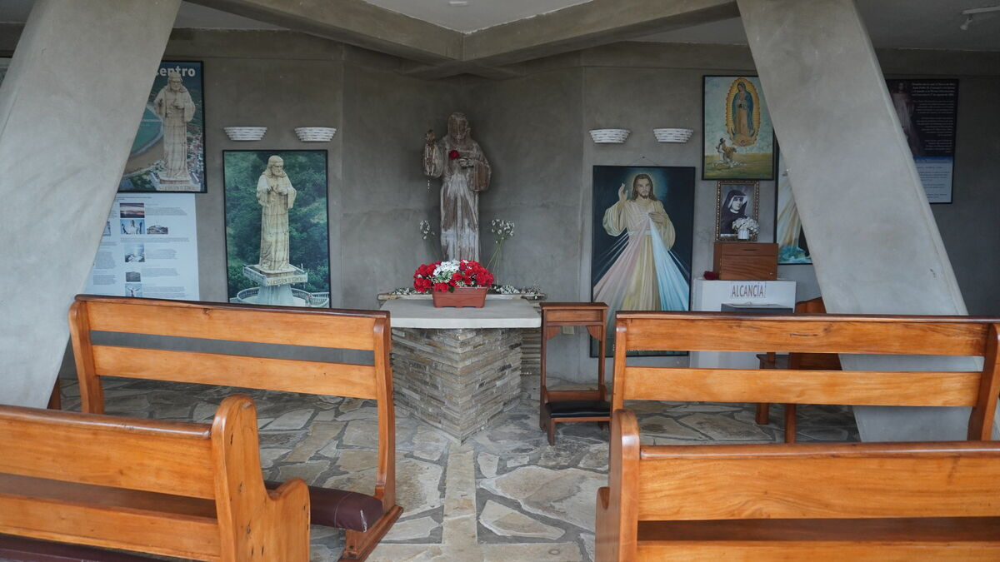
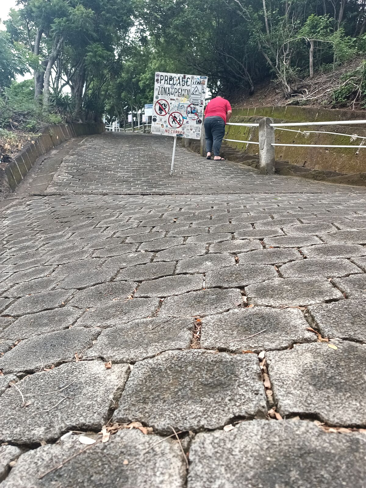
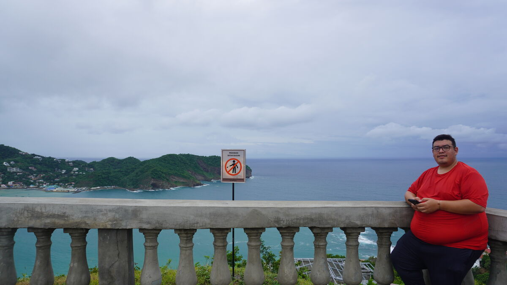

Les dejo una foto de que hasta allá arriba suben las motos Navi JAJAJA. No se imaginan lo populares que son estas motocicletas en toda Centroamérica; las hemos visto en todos lados JAJA.
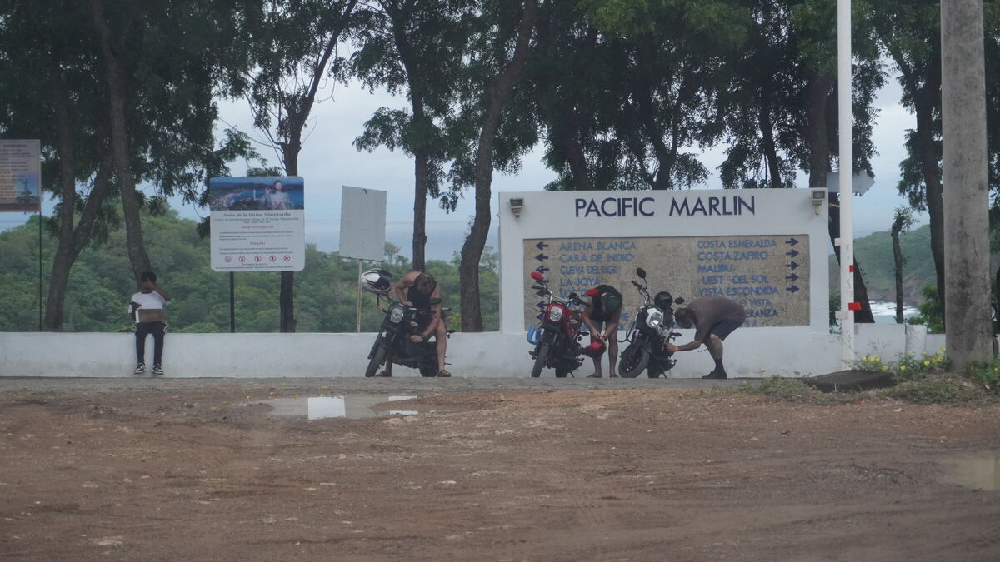
Y aquí un carrusel de cómo se veía la bahía:
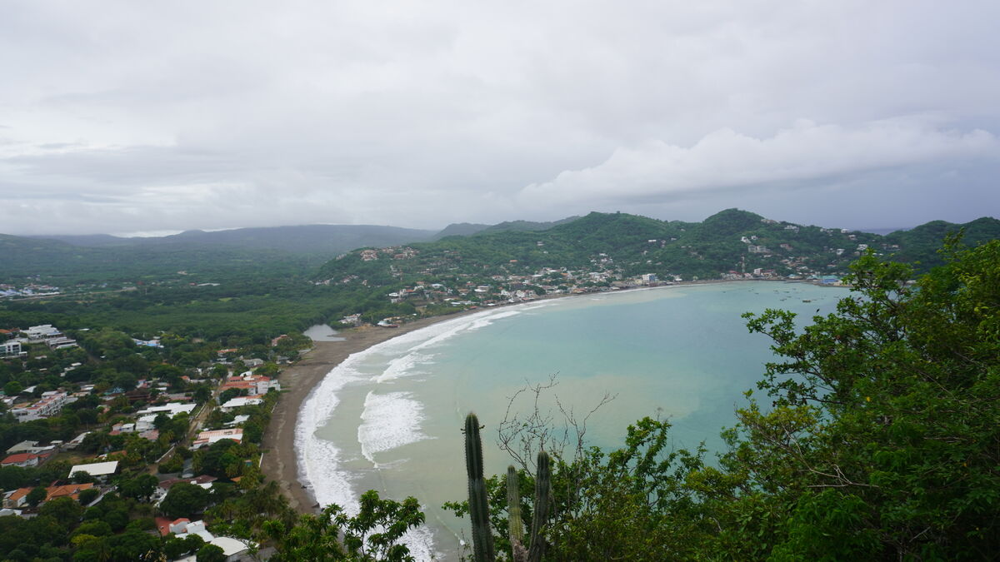
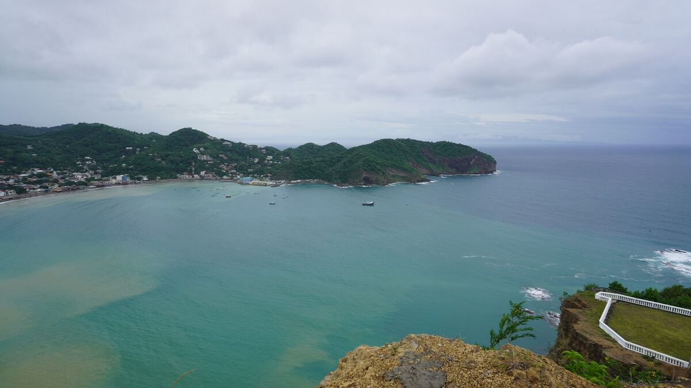
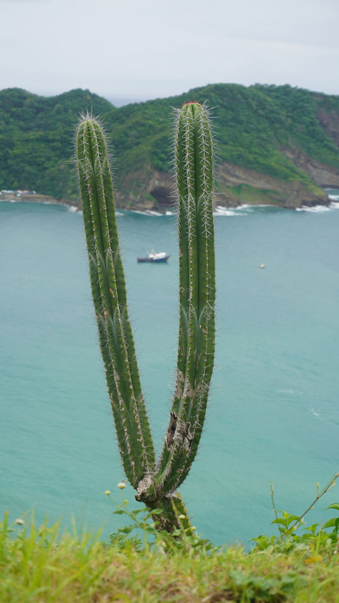
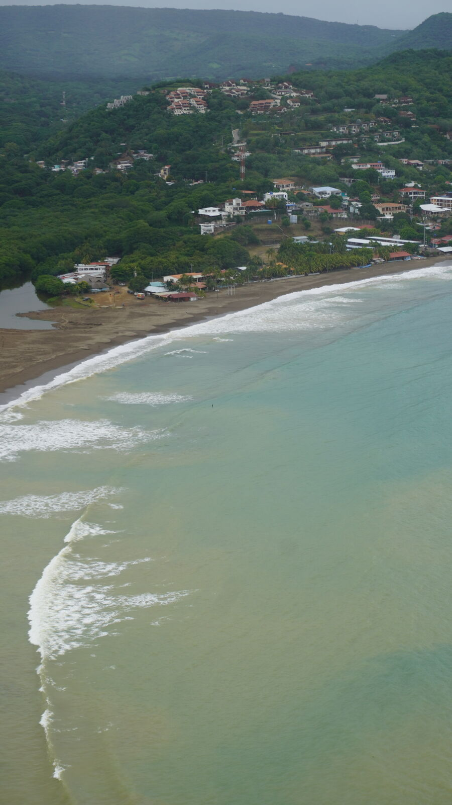
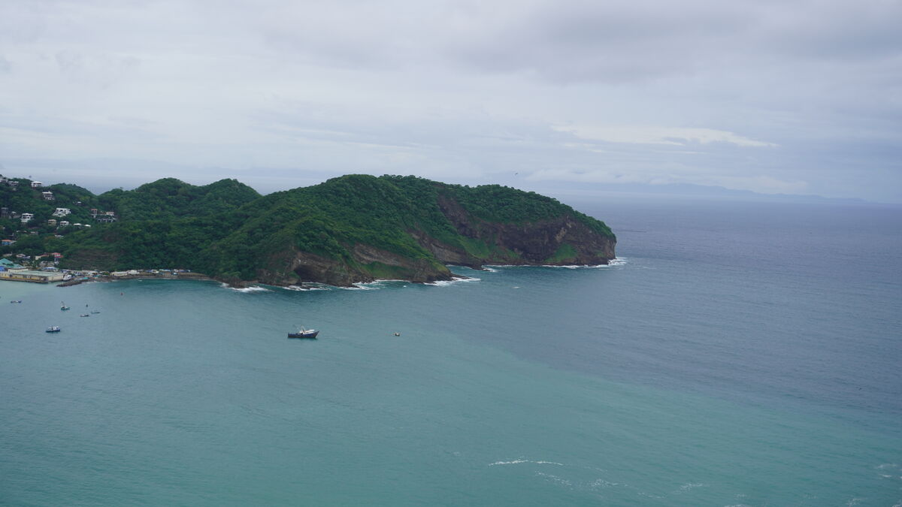
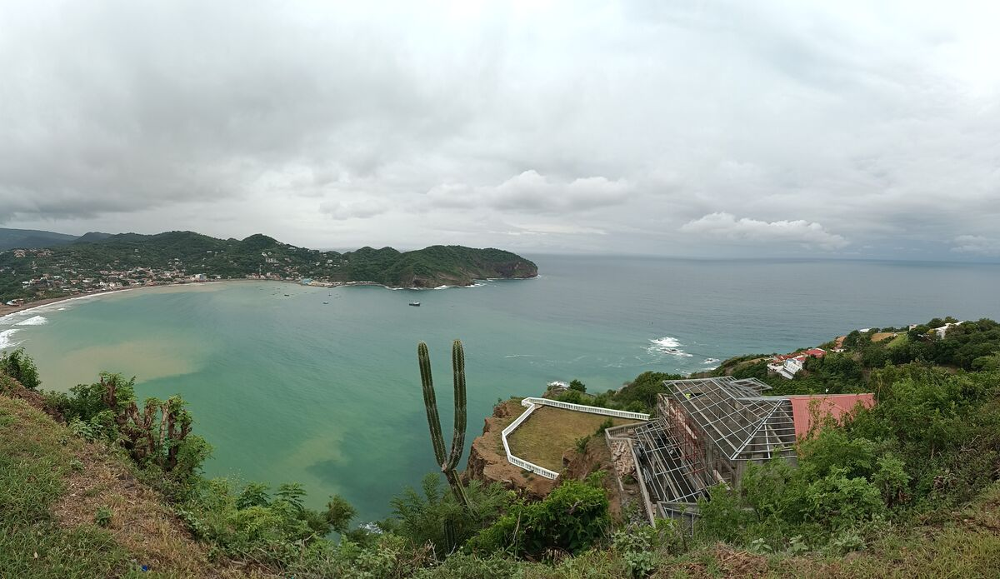
Bajamos a conocer San Juan del Sur. Tienen un malecón bien bonito y, de nuevo, bien cuidado. Fuimos a almorzar a Tuanis: yo me pedí un risotto con camarones que estaba espectacular y José un mar y tierra, con carne, camarones y una cola de langosta. Eso sí, aquí es algo caro: más o menos unos 30 a 40 dólares por persona, para que se hagan una idea. Cenamos ahí mismo y luego a trabajar y a dormir.
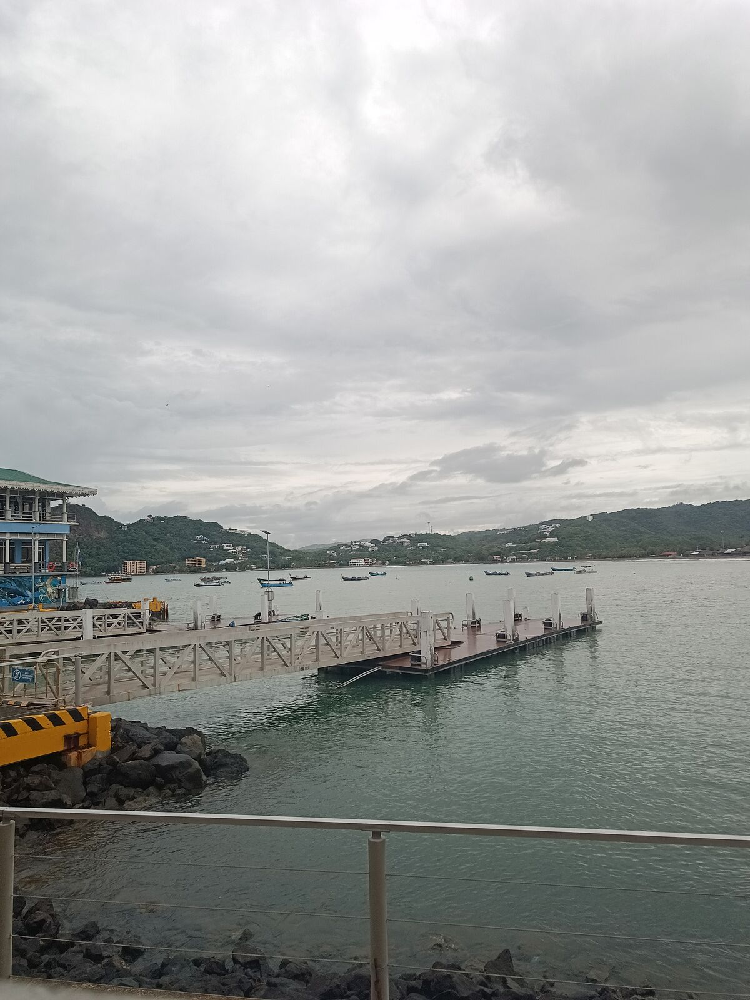
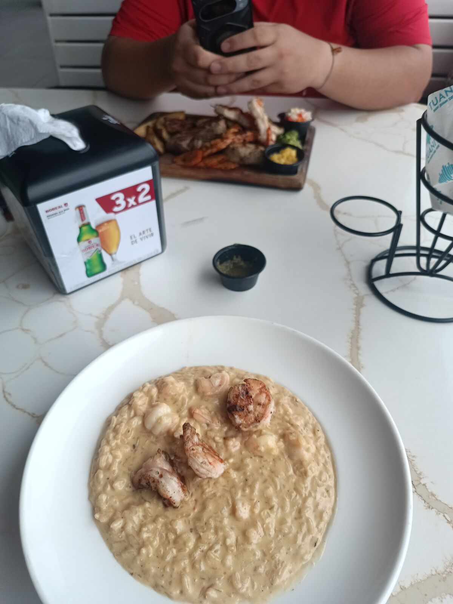
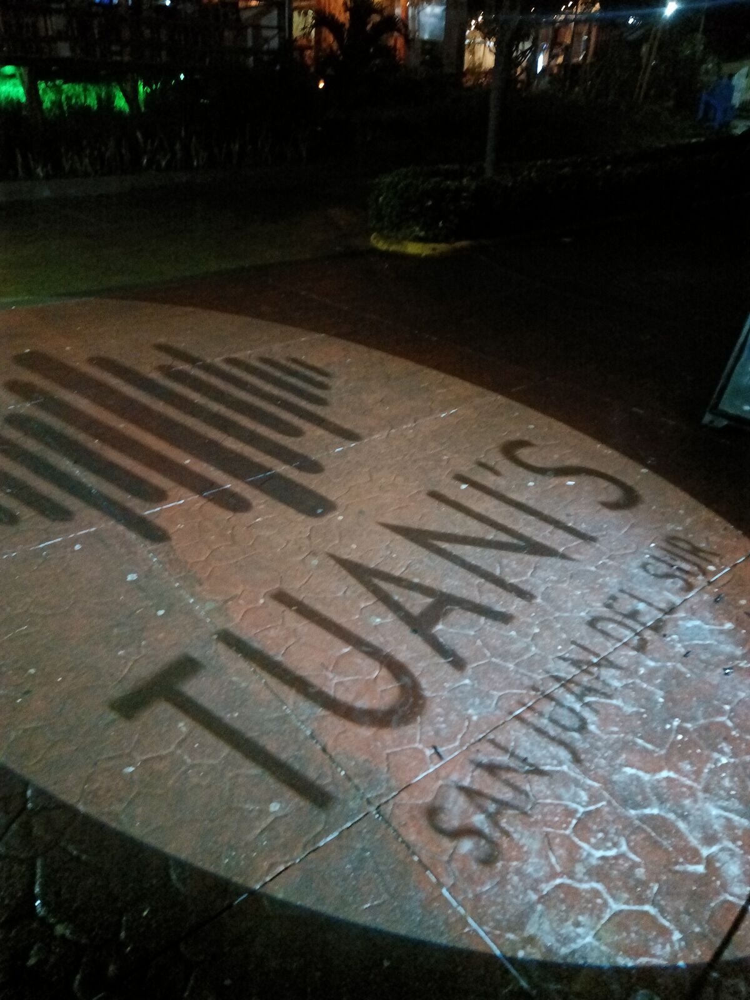
👆 Toca o haz clic en cualquier punto del mapa para leer el capítulo de ese día.